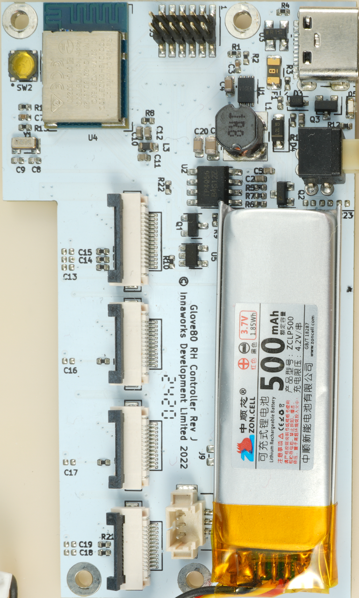

3D top preview · 3D angled preview · Component model assignments
Draft reconstruction. Route shapes and uncertain component connections are inferred. The photo contour layers in KiCad preserve the surface-copper evidence.
Final checks: 0 unrouted connections, 0 schematic/PCB mismatches; 6 estimated-footprint courtyard overlaps remain. See reconstruction notes, component confidence table, and DRC report.
